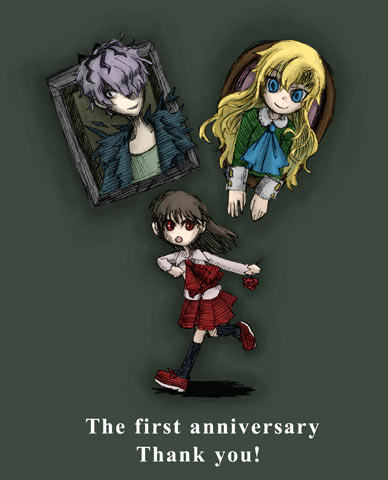

·黑白美术馆·

本介绍页为作者官方网页的简体中文授权翻译版。
作者官方网页（日文）：请点击这里
这里公开着kouri因着个人兴趣所做成的免费游戏。
按照自己的步调做更新。
可以自由连结。
Ib人气投票结果统计中……
■告知■
3/30 现在停止接收询问的邮件。
给大家添麻烦了，非常抱歉。
·本网站的所有文章、图片（除banner(图标)之外，全部禁止无授权转载、复制和加工。
·游戏内使用的素材（图片和背景音乐）同样也请不要挪作他用。
·已对外公开的游戏，请不要进行二次发布。
|
※关于投稿影片·二次创作等等※
↑这里是关于实况影片的规定。询问之前请务必先看一遍。
……………………………………………………………………………………………………
■公开中的游戏■
恐怖冒险游戏。
※本游戏全名为《Ib》，优酷实况上有人将其翻译为《美术馆惊魂记》，
也有人将其加上副标题命名为《Ib恐怖美术馆》，三者是同一款游戏。
关于游戏运行时的问题、疑问等等，请浏览Ib_wiki。
……………………………………………………………………………………………………
■更新历史■
现在正在修正中的bug等等
↑内含剧透，请务必注意。
| 13年5月1日 |
公开「Ib」ver_1.05 中文版
|
| 13年4月6日 |
·「攻略提示」页面更新
·「ED提示」页面更新
|
| 13年4月1日 |
在Vector公开「Ib」ver_1.05
·修正了一些1.04版出现的bug
·追加地下室的解谜难易度调整
|
| 13年3月19日 |
在Vector公开「Ib」ver_1.04
·修正了一些小bug
·减小了文件大小
·增加了Guertena作品
·各个攻略提示页面正在修正···请稍作等待。
|
| 13年2月27日 |
トップページを1周年記念バージョンに改装しました。
|
| 13年1月1日 |
トップページを新年バージョンに改装しました。
|
| 12年11月18日 |
「Guertena Shop」ページを追加しました。
公式グッズの情報を載せています。
|
| 12年10月27日 |
サイトのtopをハロウィンバージョンに改装しました。
|
| 12年10月18日 |
「動画投稿·二次創作等に関して」のページに追記。
·主にBGMに関しての記述を加えております。
|
| 12年10月14日 |
雑誌情報（Quarterly pixiv vol.10）を追加しました。 |
| 12年9月21日 |
Ib公式グッズのお知らせを追加しました。 |
| 12年9月12日 |
·「Ib他国語版紹介」ページにロシア語版を追加しました。
レイアウトも少々変更しました。
|
| 12年8月9日 |
·公式グッズのお知らせ追加
|
| 12年7月29日 |
·サイトレイアウトを少々変更
·「リンク」ページを追加
|
| 12年7月17日 |
「同人誌·グッズに関して」のページを追加しました。
|
| 12年7月15日 |
「Ib他国語バージョン」のページに追記。
Ib英語バージョンのご紹介です。
|
| 12年7月6日 |
「連絡先」ページを追加しました。
|
| 12年6月20日 |
「お知らせ·最新情報など」のブログをリンクさせました。
現在開催中のイベント情報を追加しました。
|
| 12年6月10日 |
「Ib関連ご紹介」ページに、Ibギターメドレーの紹介を追加。
|
| 12年5月27日 |
「Ib他国語バージョン」のページを追加（分割）
「動画投稿·二次創作等に関して」のページを整理＆少しだけ追加
「Ib関連ご紹介」ページに、Ibギターアレンジ版の紹介を追加。
|
| 12年5月6日 |
「Ibギャラリー」2P追加
·「Ib紹介ページ」追加
·「Ib_wikiページ」のリンクを追加
·「動画投稿·二次創作等に関して」のページにRTAについて追記
|
| 12年5月5日 |
「攻略ヒント」（ep3）のページを若干修正しました。 |
| 12年4月30日 |
「Ibギャラリー」のページを追加。随時更新予定。 |
| 12年4月20日 |
VectorにてIbの紹介記事が掲載されました。 |
| 12年4月14日 |
「動画投稿·二次創作等に関して」のページを追加 |
| 12年4月2日 |
「攻略ヒント」（ep4）ページを追加 |
| 12年4月1日 |
「攻略ヒント」（ep3）ページを追加 |
| 12年3月31日 |
「攻略ヒント」（ep1、ep2）ページを追加 |
| 12年3月27日 |
Vectorにて「Ib_1.02」公開
·フリーズ、進行不能のバグを修正
·アクション部分の難易度が下がりました
·その他細かなバグを修正＆ストーリーの補足
「キャラクター」ページを追加
「操作方法」ページの内容を少々追加
|
| 12年3月14日 |
「修正中のバグ＆次回更新時の追加要素」ページを追加 |
| 12年3月10日 |
「EDヒント」ページを追加 |
12年3月9日 |
Vectorにて「Ib1.01」公開
※フリーズバグ修正＆うごくえほん用修正パッチを追加
|
| 12年3月4日 |
※不具合についてのページを追加 |
| 12年2月27日 |
Vectorにて「Ib1.00」公開 |
| 12年2月25日 |
HP公開 |
| 12年2月中旬 |
「Ib」ver1.00完成 |
|
11年7月中旬 |
「Ib」作成開始 |
|